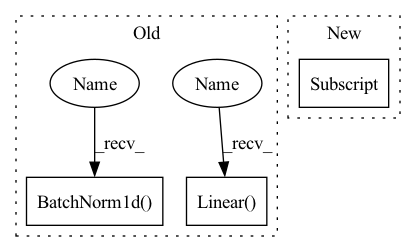

Pattern ID :1978
Before Change
self.use_batch_norm = use_batch_norm
self.fc1 = nn.Linear( observation_shape[0], 256)
self.fc2 = nn.Linear(256, 256)
if use_batch_norm:
self.bn1 = nn.BatchNorm1d( 256)
self.bn2 = nn.BatchNorm1d(256)
def forward(self, x):
h = torch.relu(self.fc1(x))After Change
hidden_units = [256, 256]
self.use_batch_norm = use_batch_norm
self.feature_size = hidden_units[-1]
in_units = [observation_shape[0]] + hidden_units[:-1]
self.fcs = nn.ModuleList()
self.bns = nn.ModuleList()In pattern: SUPERPATTERN
Frequency: 3
Non-data size: 3
Instances Fragment ID: 6269822
Project Name: takuseno/d3rlpy
Commit Name: 557b11a8d5cf75edfc0a2928399d5192d1757ddb
Time: 2020-06-16
Author: takuma.seno@gmail.com
File Name: skbrl/models/torch/heads.py
M Class Name: VectorHead
N Class Name: VectorHead
M Method Name: __init__(4)
N Method Name: __init__(3)
M Parent Class: nn.Module
N Parent Class: nn.Module
M File Name: skbrl/models/torch/heads.py
N File Name: skbrl/models/torch/heads.py
M Start Line: 84
M End Line: 91
N Start Line: 96
N End Line: 114
Before Change
super(Generator, self).__init__()
self.z_dim = z_dim
self.device=device
self.fc1 = nn.Linear( z_dim, hidden_dim, bias = False)
self.bn1 = nn.BatchNorm1d( hidden_dim, affine = False, eps=1e-6, momentum = 0.5)
self.fc2 = nn.Linear(hidden_dim, hidden_dim, bias = False)
self.bn2 = nn.BatchNorm1d(hidden_dim, affine = False, eps=1e-6, momentum = 0.5)
self.fc3 = LinearWeightNorm(hidden_dim, input_dim, weight_scale = 1)
self.bn1_b = Parameter(torch.zeros(hidden_dim))After Change
if _==0:
in_dim=z_dim
else:
in_dim=hidden_dim[_-1]
out_dim=hidden_dim[_]
fc=nn.Linear(in_dim, out_dim, bias=False)
nn.init.xavier_uniform(fc.weight)
self.layers.append(fc) Fragment ID: 6269821
Project Name: ygzwqzd/lamda-ssl
Commit Name: ea5ee280fc4c0242970da002d41f42c1aaed9c96
Time: 2022-03-18
Author: 1129198222@qq.com
File Name: Semi_sklearn/Network/ImprovedGan.py
M Class Name: Generator
N Class Name: Generator
M Method Name: __init__(6)
N Method Name: __init__(5)
M Parent Class: nn.Module
N Parent Class: nn.Module
M File Name: Semi_sklearn/Network/ImprovedGan.py
N File Name: Semi_sklearn/Network/ImprovedGan.py
M Start Line: 63
M End Line: 71
N Start Line: 70
N End Line: 91
Before Change
else:
print("usinf mlpp")
self.feat1 = Mlp(in_channels=c[0], in_features=f[0], out_channels=c[1], out_features=f[1])
self.acvt1 = nn.Sequential(nn.BatchNorm1d( c[1]) , nn.Softsign())
self.feat2 = Mlp(in_channels=c[1], in_features=f[1], out_channels=c[2], out_features=f[2])
self.acvt2 = nn.Sequential(nn.BatchNorm1d(c[2]), nn.Softsign())
self.classifier = nn.Sequential(nn.Flatten(), nn.Dropout(p=0.1), nn.Linear( c[2]*f[2], num_class) )
def forward(self, x, neighbor):
if not self.ismlp:After Change
//// the Flag ismlp will encode without neighbor
super(LGL, self).__init__()
self.ismlp = ismlp
c = [1, 4, hidden[1] ]
f = [feat_len, 16, 1]
self.feat1 = FeatTrans1d(in_channels=c[0], in_features=f[0], out_channels=c[1], out_features=f[1]) Fragment ID: 6269819
Project Name: wang-chen/lgl
Commit Name: dd8f35ac79c1dcb4107c1d6bf229349c6f2ee91f
Time: 2021-05-19
Author: yuhengq@andrew.cmu.edu
File Name: models/lgl.py
M Class Name: LGL
N Class Name: LGL
M Method Name: __init__(5)
N Method Name: __init__(4)
M Parent Class: nn.Module
N Parent Class: nn.Module
M File Name: models/lgl.py
N File Name: models/lgl.py
M Start Line: 38
M End Line: 55
N Start Line: 37
N End Line: 48
Before Change
self.use_batch_norm = use_batch_norm
self.fc1 = nn.Linear( observation_shape[0], 256)
self.fc2 = nn.Linear(256, 256)
if use_batch_norm:
self.bn1 = nn.BatchNorm1d( 256)
self.bn2 = nn.BatchNorm1d(256)
def forward(self, x):
h = torch.relu(self.fc1(x))After Change
self.use_batch_norm = use_batch_norm
self.feature_size = hidden_units[-1]
in_units = [observation_shape[0]] + hidden_units[:-1]
self.fcs = nn.ModuleList()
self.bns = nn.ModuleList()
for in_unit, out_unit in zip(in_units, hidden_units):
self.fcs.append(nn.Linear(in_unit, out_unit)) Fragment ID: 6269815
Project Name: takuseno/d3rlpy
Commit Name: 557b11a8d5cf75edfc0a2928399d5192d1757ddb
Time: 2020-06-16
Author: takuma.seno@gmail.com
File Name: skbrl/models/torch/heads.py
M Class Name: VectorHead
N Class Name: VectorHead
M Method Name: __init__(4)
N Method Name: __init__(3)
M Parent Class: nn.Module
N Parent Class: nn.Module
M File Name: skbrl/models/torch/heads.py
N File Name: skbrl/models/torch/heads.py
M Start Line: 84
M End Line: 91
N Start Line: 96
N End Line: 114